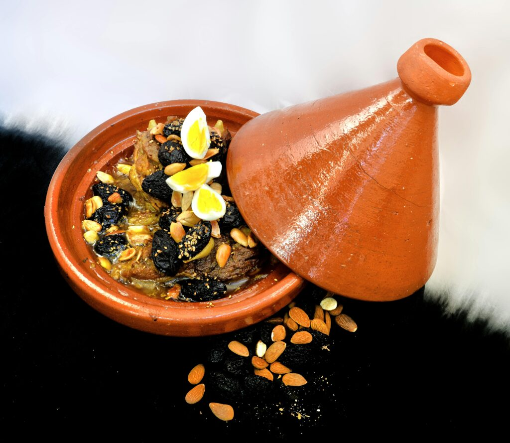
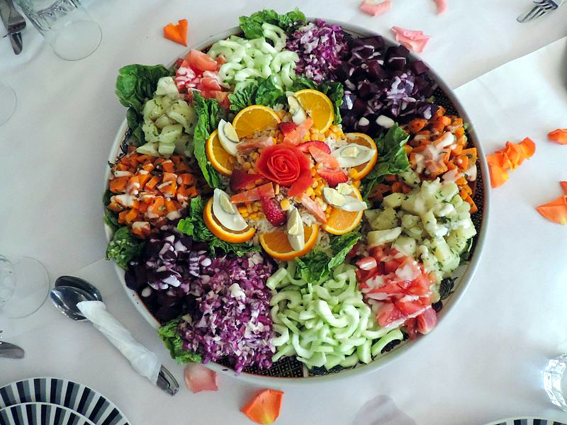

Authentic flavours of Morocco
Every dish, a taste of local hospitality
Savour slow-cooked tagines, fluffy couscous, fresh salads and traditional pastries — each prepared with aromatic spices like saffron, cinnamon and cumin, and served with refreshing mint tea in a warm, welcoming atmosphere.
Fresh flavours to begin
The heart of Moroccan cuisine

Tagine
Slow-cooked in traditional earthenware — lamb with prunes and almonds, chicken with preserved lemon and olives, or a vegetable and chickpea tagine.

Couscous
Fluffy steamed semolina with a rich medley of meats, seasonal vegetables and aromatic spices, garnished with toasted almonds.

Pastilla
Flaky filo layered with spiced chicken and almonds, dusted with cinnamon — a sweet-and-savoury Moroccan classic.
Méchoui
Tender, slow-roasted lamb seasoned simply to let the flavour shine — a celebration dish of the south.
Traditional pastries & tea
Choose your board
Add dining to your stay and let us take care of every meal.
Bed & Breakfast
A generous Moroccan breakfast on the terrace to start each day.
Half Board
Breakfast and a home-cooked dinner of Moroccan specialities.
Full Board
All meals included — ideal for explorers spending full days in the valley.

Wake up to the Atlas Mountains
Reserve directly with us for the best rate, a warm welcome, and a stay you'll remember long after you leave the valley.